文章分享
企業數位轉型的重要性
在課程學習與實務經驗中，我深刻體會到資訊技術對企業的重要性。 隨著市場快速變化，企業不僅需要改善產品本身， 更需要透過資訊系統提升工作效率與決策品質。
以我家中的文具進口代理事業為例， 傳統的人工管理模式常面臨庫存、訂單追蹤等問題， 如果能引進適當的資料系統與分析工具， 就能大幅降低成本、提升客服品質， 未來我希望將資訊管理知識應用於家業優化， 同時也期許能協助其他企業完成數位轉型。
現任國立聯合大學資訊管理學系學會副會長，關注企業數位轉型、組織管理與流程優化，希望透過資訊管理知識與溝通協調能力，協助企業提升營運效率並創造更多價值。
「讓溝通更有效率，讓執行更有方向」
我是一位融合資訊管理與永續思維、致力推動企業數位轉型的青年，自幼成長於從事文具進口代理的家庭，使我深刻理解企業經營的挑戰與變革需求，在家中經濟逐漸穩定後，父母投注心力於我品格與能力的培養，鼓勵我養成自律、積極、獨立思考的習慣。
在僑泰高中期間、我曾擔任整潔糾察隊副隊長、交通糾察中控與整潔評分委員，主導改善校園回收場與校車場的動線與安全問題，展現了規劃執行力與現場應變能力，此外我也擔任羽球A社與撞球飛鏢社社長，從中培養了團隊領導與跨單位溝通的能力。
進入大學後，我持續參與公共事務，曾擔任義守大學學生議會議員，現任國立聯合大學資訊管理學系學會副會長，並在偏鄉遠距課輔活動中擔任多項重要職務，成長過程中，我受到許多貴人的幫助，也因此希望將這份善意延續下去，透過實際行動與資訊管理專業回饋社會。
以資訊管理為基礎，結合組織協調、教育服務與產業交流，我樂於跨出單一領域，在不同情境中學習，將所學應用在實際任務中。
整理大學以來的專案與競賽、組織參與、教育服務、企業交流與獲獎紀錄，共16項，點擊「查看內容」可開啟視窗，閱讀說明與查看完整圖片。
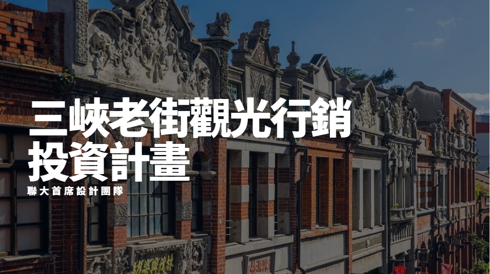
參加 2026 Impact Star 青年影響力啟動賽，以三峽老街為主題，分析商業同質化、年輕族群旅遊需求轉變與文化體驗參與不足等問題，提出結合地方故事、遊戲化互動及數位工具的觀光行銷方案。 透過具參與感的體驗設計，提升老街吸引力與遊客再次造訪意願，期望延長停留時間、增加消費機會，兼顧地方文化特色與商業發展。
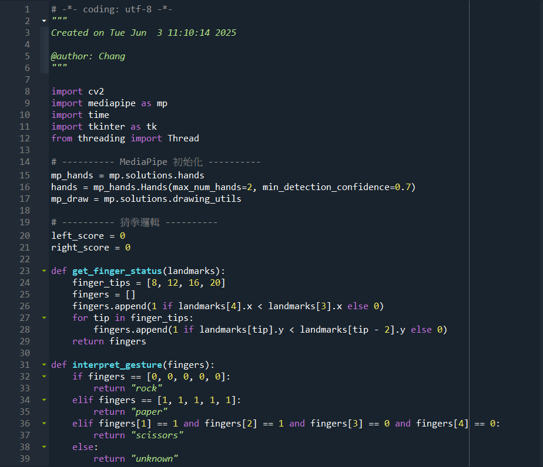
運用 Python、MediaPipe 與 OpenCV 開發雙人即時手勢辨識猜拳遊戲，透過攝影機擷取影像，分析手部關鍵點與手指張合狀態，辨識剪刀、石頭、布。 整合手勢分類、勝負判定與積分管理功能，即時呈現對戰結果，實踐電腦視覺與人機互動技術的應用。
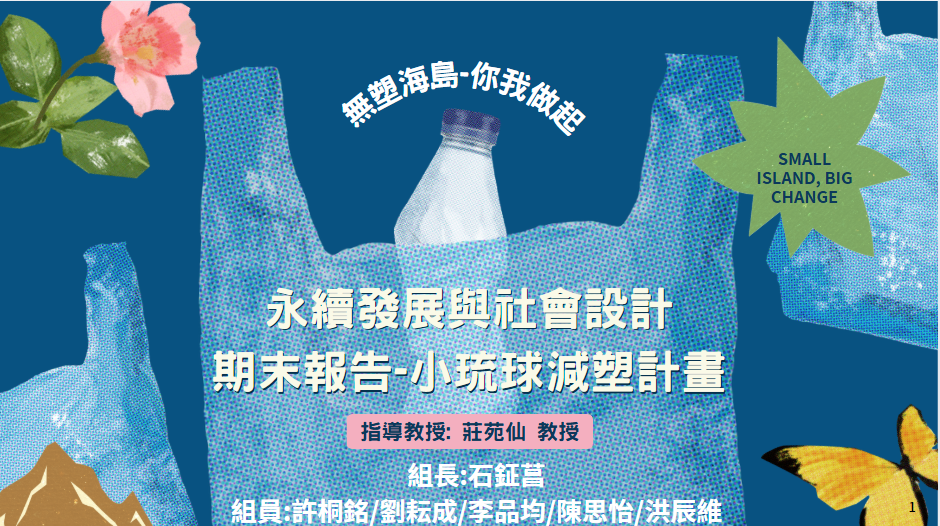
運用冰山理論分析塑膠使用習慣與制度問題，提出結合 LINE 官方帳號、Instagram 社群及環保任務回饋的數位推廣方案，串聯在地減塑資源，提升遊客參與意願，實踐永續發展與社會設計理念。
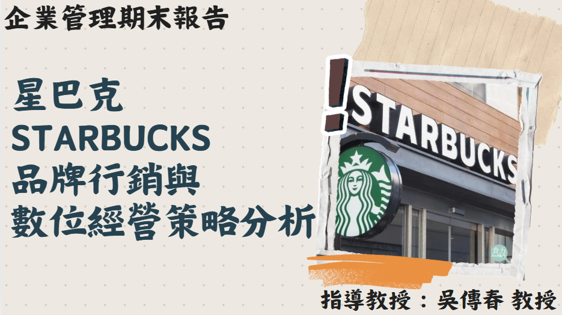
以星巴克為研究對象，探討品牌行銷與數位經營策略，關注品牌定位、消費者互動及數位服務之間的連結。 透過案例整理與分析，理解企業如何結合品牌特色與數位工具，經營顧客關係並創造消費體驗。
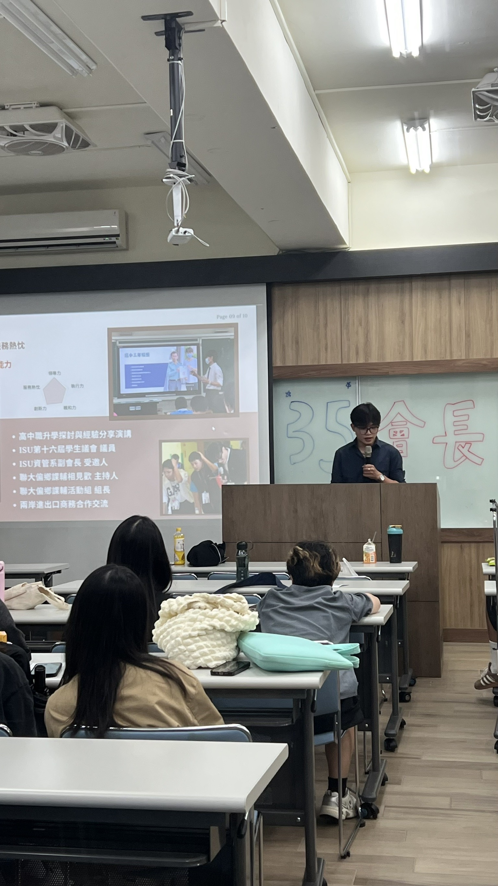
透過選舉擔任資訊管理學系學會副會長，主導行政管理與活動規劃，負責跨部門溝通、工作協調及組織事務。 透過日常運作與活動執行，協助團隊釐清分工、掌握進度，累積組織管理與團隊合作經驗。
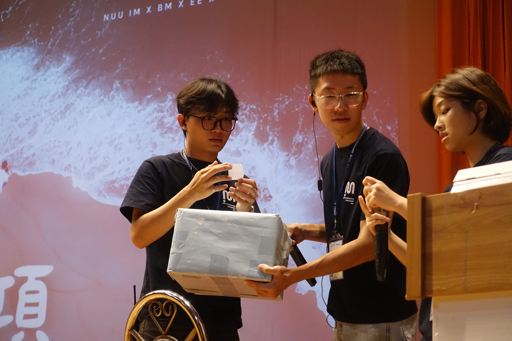
擔任「浪花洗禮共‧譜青春」六系聯合迎新副召集人，協助統籌活動規劃與籌備，協調六系需求、整合各系人力與活動資源，推動跨系分工及流程銜接。 活動期間協調各組工作與資源調度，支援現場執行，累積跨系溝通、資源整合與大型活動籌辦經驗。
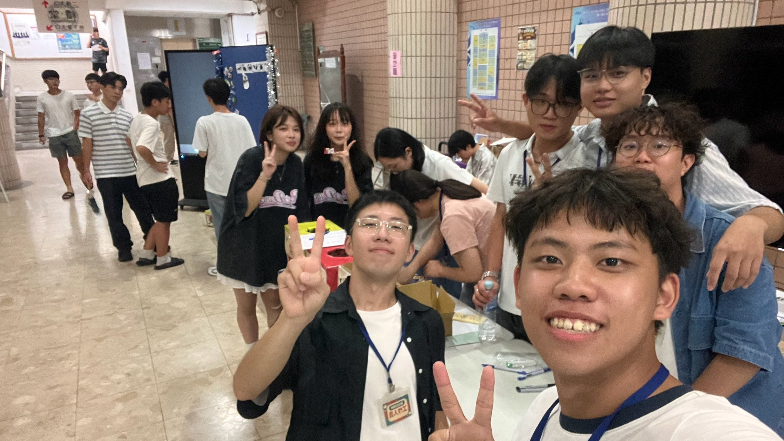
資訊管理學系學會為社團博覽會協辦單位，活動當天負責參與者簽到與簽退、餐點發放、抽獎作業及闖關任務引導。 透過現場服務與流程協調，協助活動順利進行，累積人員引導、行政支援與活動執行經驗。
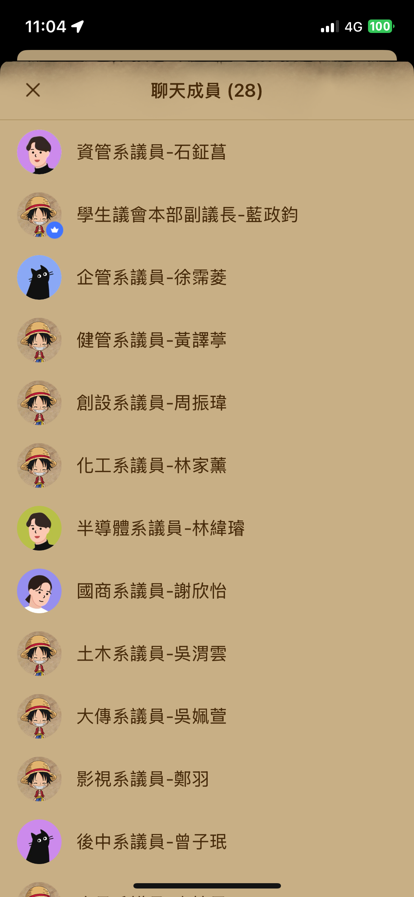
代表資訊管理學系擔任第十六屆學生議會議員，參與學生自治事務及校務議題討論，關注學生意見與校園需求。 透過議會參與，累積公共議題討論、意見表達與溝通協調經驗。
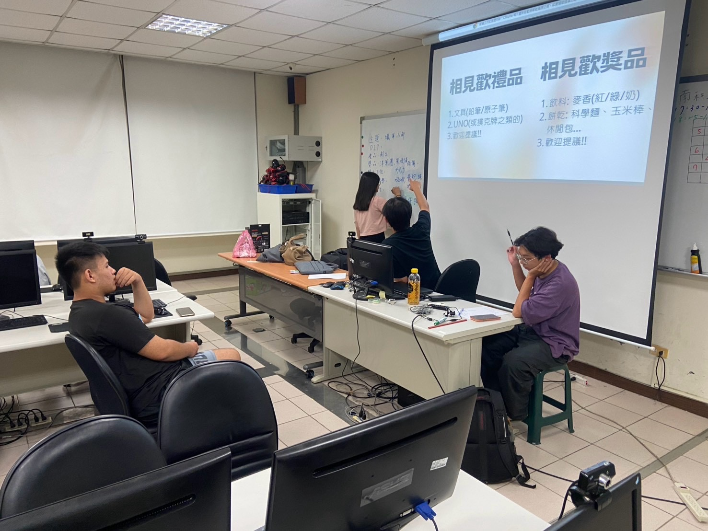
擔任偏鄉遠距課輔活動組組長，主導組織內活動規劃與籌備工作，負責人力調度及現場指揮。 透過工作分配與流程安排，協調團隊完成活動任務，支持大學伴與小學伴的交流及互動。
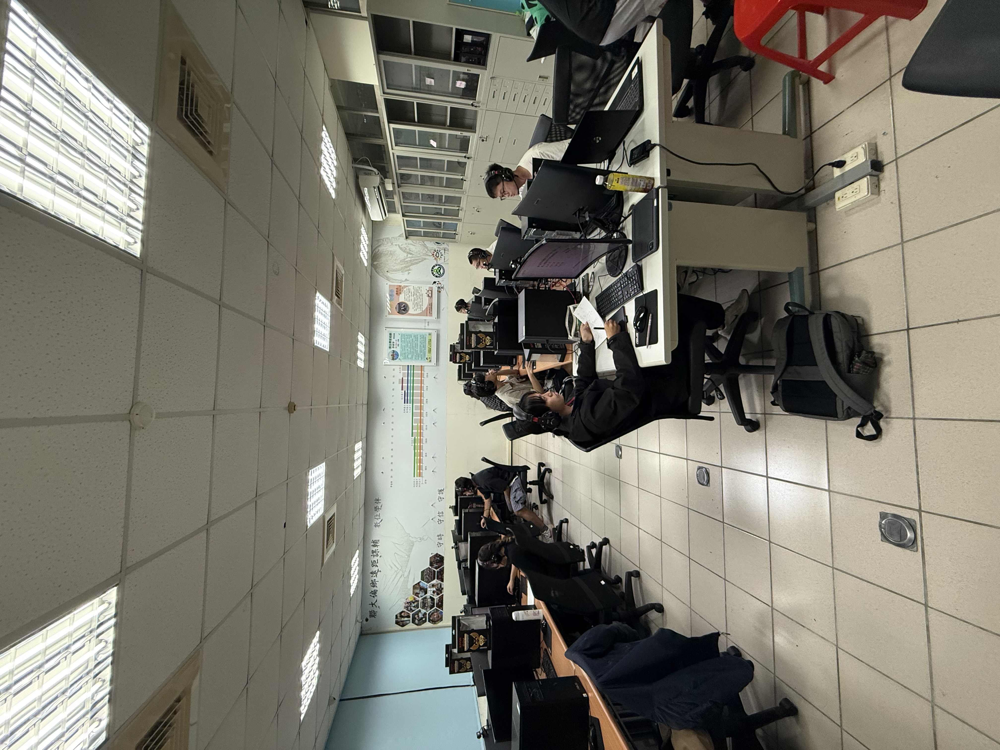
負責偏鄉遠距課輔班級管理，統籌大學伴與小學伴的課程協調及教學支援。 維持課程秩序、處理突發狀況、檢查與排除設備異常，並進行系統問題回報，確保課輔順利進行，累積班級管理、技術支援與現場應變經驗。
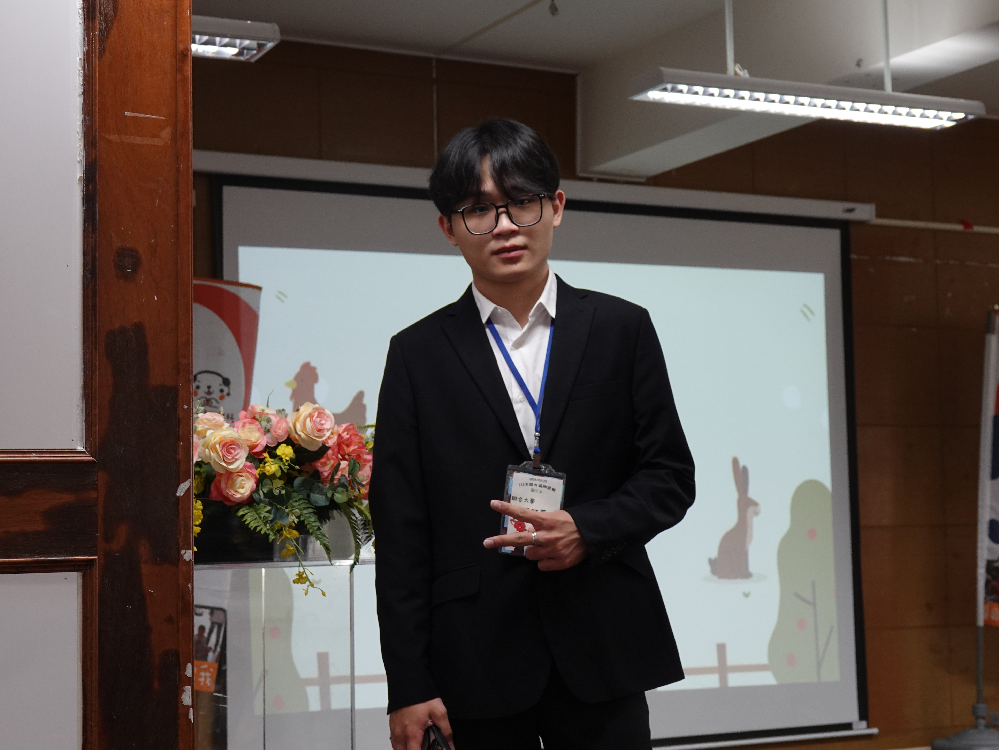
擔任偏鄉遠距課輔相見歡活動主持，負責活動串場、流程銜接與時間掌握。 透過清楚的引導與現場互動，營造溫馨、融洽的氛圍，協助大學伴與小學伴建立連結，累積公開表達與臨場應變經驗。
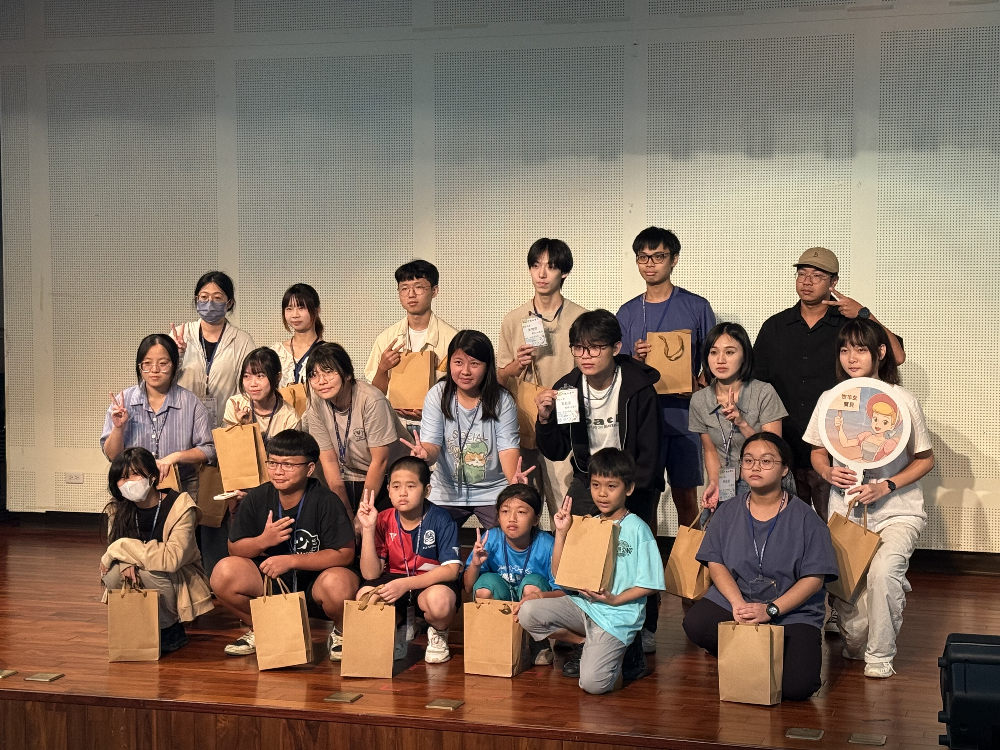
參與教育部數位學伴計畫相見歡活動籌備並擔任隊輔，帶領偏鄉孩童參與闖關，說明關卡任務、維持隊伍秩序並掌握活動進度。 透過陪伴與鼓勵提升孩童的參與意願，協助團隊合作完成任務，最終帶領隊伍獲得闖關活動第二名。
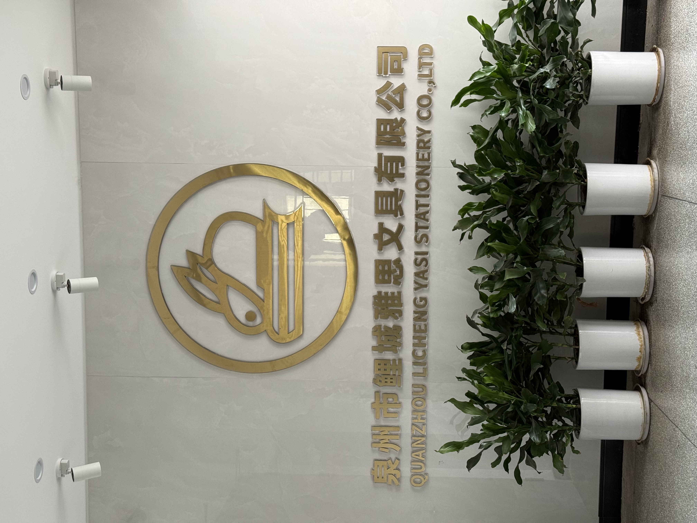
參與中國文具企業之商務往來，接觸產品採購、商品經銷及委託代工（OEM）等合作模式，了解不同合作方式的運作流程與溝通需求。 透過實務交流，深化對文具產業採購與經銷流程的認識，累積跨境供應鏈與企業合作實務經驗。
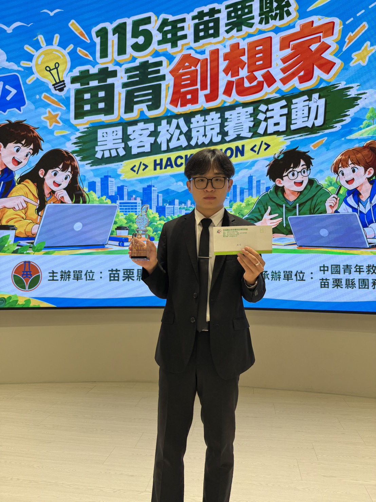
以「客庄玩市集」為提案，結合苗栗四季農產與客家文化，規劃可嵌入既有節慶的移動市集模式。 透過 LINE 闖關集點、四季集章護照及攤商核銷機制，串聯文化體驗與在地消費，期望提升跨季回訪意願，帶動周邊觀光。 提案入圍115年「苗青創想家」黑客松競賽決賽，並榮獲「最佳潛力星」獎。
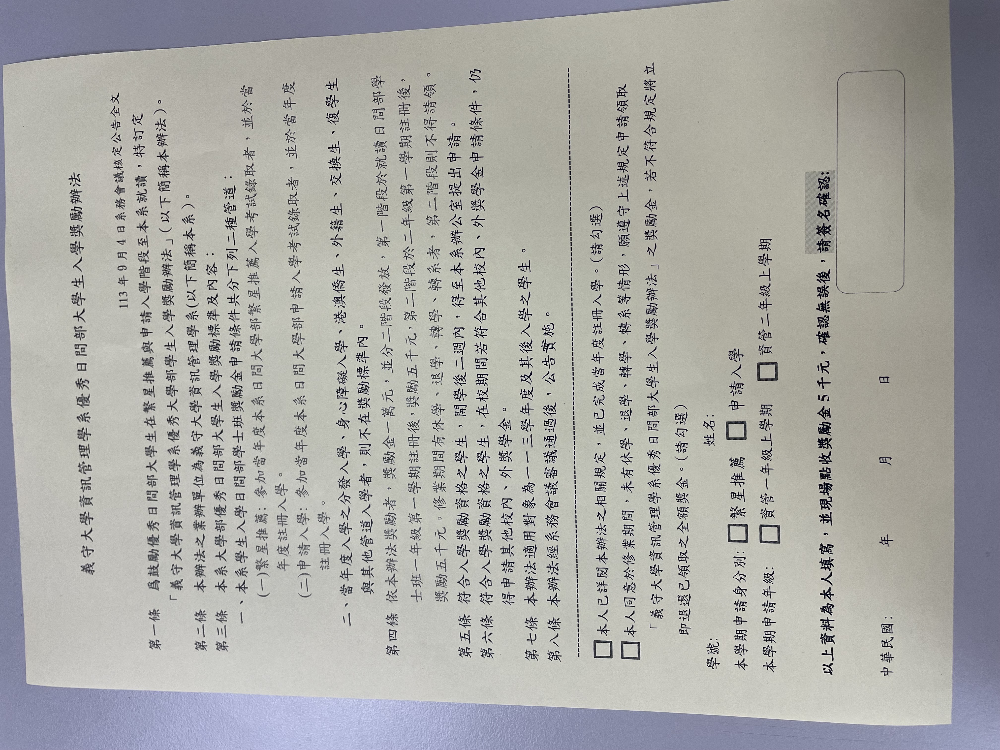
透過申請入學錄取資訊管理學系，符合系上優秀新生申請入學獎學金標準，並依規定完成切結書簽署程序，獲頒資訊管理學系專屬的新生獎學金。 以此為動力，持續投入資訊管理專業學習，結合程式設計、組織管理與實務參與，累積跨領域應用能力。
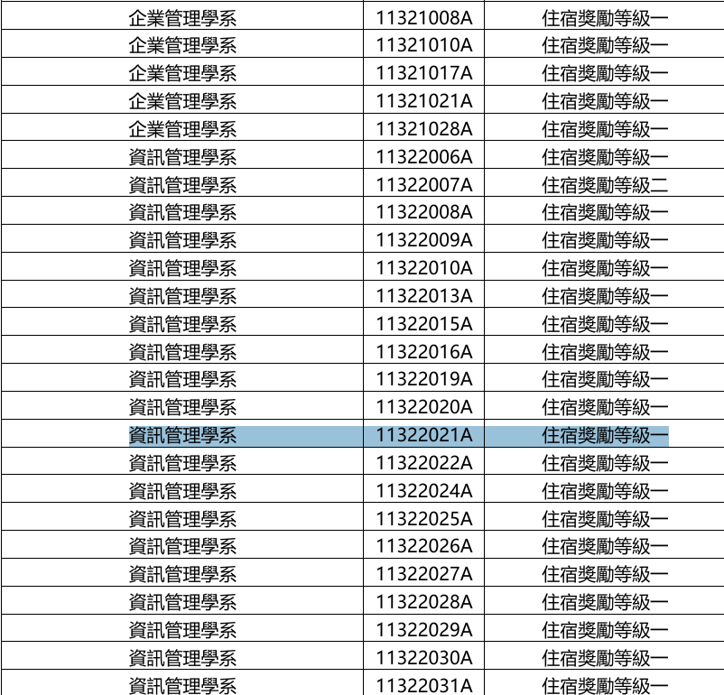
學測成績達優秀新生住宿獎學金標準，獲頒住宿獎學金，展現高中階段的學習成果與升學準備。 這份肯定也成為持續精進的動力，期許自己以自律、積極的態度投入大學課業與校園事務，累積專業能力及實務經驗。
主導系學會行政管理與活動規劃， 負責跨部門協調與組織發展。
主導課輔的各項活動與籌備工作， 並進行人力調度與活動現場指揮。
協助統籌六系聯合迎新的活動規劃與籌備工作，負責跨系溝通、工作分配與流程協調，並支援活動現場執行。
負責相見歡活動主持工作與時間控制， 營造溫馨、融洽的氛圍。
負責偏鄉遠距課輔班級管理，統籌大學伴與小學伴的課程協調及教學支援，確保課輔順利進行。
參與教育部數位學伴計畫相見歡活動與籌備，擔任活動隊輔， 帶領偏鄉孩童闖關互動與學習。
代表資訊管理學系擔任系議員、參與校內學生自治事務與校務議題討論，推動校園改革。
獲全體會長候選人邀請擔任副會長，並於會長當選後正式受聘，展現團隊領導與協調能力受肯定；後因轉學規劃請辭。
負責校園環境管理、清潔檢查及隊員招募與培訓，並參與班級衛生評分，確保評分公平與標準一致。
規劃社團活動與訓練課程、進行社團管理，組織比賽與交流活動。
負責校園交通秩序維護與安全管理，指揮交通與引導校車進出。
領導社團成員開展多項活動、進行社團管理，建立社團文化與凝聚力。
主導改善校園回收場與校車場人為問題， 優化動線設計與安全管理措施。
回母校進行升學探討演講，分享高中學習經驗與生涯規劃。
在課程學習與實務經驗中，我深刻體會到資訊技術對企業的重要性。 隨著市場快速變化，企業不僅需要改善產品本身， 更需要透過資訊系統提升工作效率與決策品質。
以我家中的文具進口代理事業為例， 傳統的人工管理模式常面臨庫存、訂單追蹤等問題， 如果能引進適當的資料系統與分析工具， 就能大幅降低成本、提升客服品質， 未來我希望將資訊管理知識應用於家業優化， 同時也期許能協助其他企業完成數位轉型。
回母校進行升學探討與經驗分享演講
聯大資管系學會迎新主持
聯大偏鄉課輔活動團體照